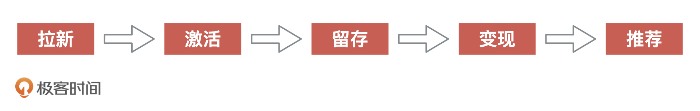
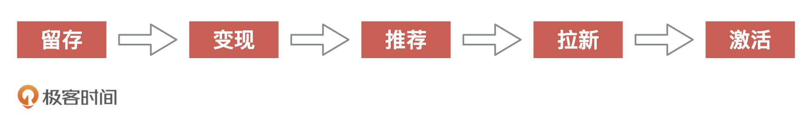
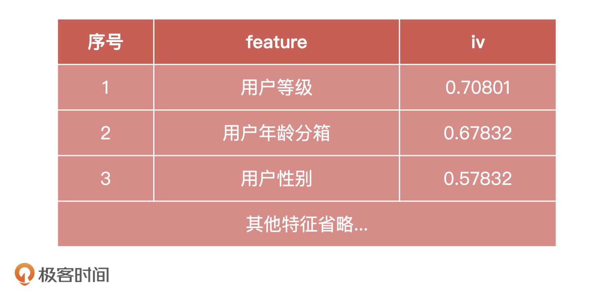
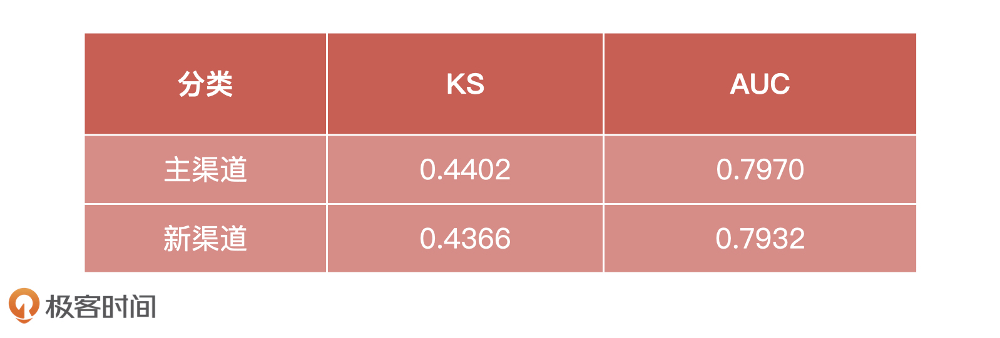

- 00 开篇词 你好，产品经理！你的未来价值壁垒在哪儿？.md.html
- 01 行业视角：产品经理眼中的人工智能.md.html
- 02 个人视角：成为AI产品经理，要先搞定这两个问题.md.html
- 03 技术视角：AI产品经理需要懂的技术全景图.md.html
- 04 过来人讲：成为AI产品经理的两条路径.md.html
- 05 通过一个 AI 产品的落地，掌握产品经理工作全流程.md.html
- 06 AI 模型的构建过程是怎样的？（上）.md.html
- 07 AI模型的构建过程是怎样的（下）.md.html
- 08 算法全景图：AI产品经理必须要懂的算法有哪些？.md.html
- 09 K近邻算法：机器学习入门必学算法.md.html
- 10 线性回归：教你预测，投放多少广告带来的收益最大.md.html
- 11 逻辑回归：如何预测用户是否会购买商品？.md.html
- 12 朴素贝叶斯：让AI告诉你，航班延误险该不该买？.md.html
- 13 决策树与随机森林：如何预测用户会不会违约？.md.html
- 14 支持向量机：怎么预测股票市场的涨与跌？.md.html
- 15 K-means 聚类算法：如何挖掘高价值用户？.md.html
- 16 深度学习：当今最火的机器学习技术，你一定要知道.md.html
- 17 模型评估：从一个失控的项目看优秀的产品经理如何评估AI模型？.md.html
- 18 核心技能：产品经理评估模型需要关注哪些指标？.md.html
- 19 模型性能评估（一）：从信用评分产品看什么是混淆矩阵？.md.html
- 20 模型性能评估（二）：从信用评分产品看什么是KS、AUC？.md.html
- 21 模型性能评估（三）：从股价预测产品看回归算法常用的评估指标.md.html
- 22 模型稳定性评估：如何用PSI来评估信用评分产品的稳定性？.md.html
- 23 模型监控：产品经理如何建设算法模型监控指标体系？.md.html
- 24 推荐类产品（一）：推荐系统产品经理的工作职责与必备技能.md.html
- 25 推荐类产品（二）：从0打造电商个性化推荐系统产品.md.html
- 26 预测类产品（一）：用户复购意向预测的底层逻辑是什么？.md.html
- 27 预测类产品（二）：从0打造一款预测用户复购意向的产品.md.html
- 28 预测类产品（三）：从0打造一款“大白信用评分产品”.md.html
- 29 自然语言处理产品：从0打造一款智能客服产品.md.html
- 30 AI产品经理，你该如何提升自己的价值？.md.html
- 31 AI产品经理面试，这些问题你必须会答！.md.html
- 春节加餐1 用户增长模型：怎么利用AI技术判断新渠道性价比？.md.html
- 春节加餐2 一次答疑，带你回顾模型评估的所有基础概念.md.html
- 期中周测试题 ，你做对了吗？.md.html
- 期中答疑 AI产品经理热门问题答疑合集.md.html
- 结束语 唯一不变的，就是变化本身！.md.html
- 捐赠
春节加餐1 用户增长模型：怎么利用AI技术判断新渠道性价比？
你好，我是海丰。
马上就要到新年了，我在这里先给你拜个早年，祝你牛年顺风顺水，随心随意 ！
到今天为止，我们基本上已经把 AI 产品经理的三大能力学完了，我非常开心看到很多同学一直坚持学习到现在，并且还一直和我互动，比如“悠悠”“AsyDong”“Yesss!”等等，希望你们能和我在新的一年里继续走完这趟 AI 学习之旅。
春节期间在陪伴家人之余，也希望你不要停下学习的脚步。这里，我特意为你准备了两篇轻松的加餐。今天，我们先来聊聊很多同学都比较关注的用户增长模型，说说拉新模型怎么构建，以及模型效果怎么评估。
关于用户增长理论
首先，我们来说说什么是用户增长理论。关于用户增长有一个著名的模型——AARRR，它是Acquisition、Activation、Retention、Revenue、Refer这5个单词的缩写，对应着用户生命周期中的5个重要环节，如下图所示。

如果从拉新角度出发，要想实现一个完美的模型，有一个重要的前提就是需要不断地烧钱获客。但从如今市场上的流量分布来看，新用户的增长一定会越来越缓慢，野蛮式的扩张已经成了过去式，资本的进入也愈来愈趋于理性，所以，从这套模型出发，从获客到激活再到留存的这条路径困难重重。
这个时候，我们可以换一种思路，直接从留存出发。如下图所示，也就是先做好产品，夯实基础建设，做好运营服务，然后再在留存的基础上进行变现，确保产品的变现能力后，再进行拉新。这样才会使产品拥有复购的能力，而不会陷入拉新、流失、再拉新、再流失的恶性循环中。

现阶段，先留存、再变现，接着推荐、拉新、激活也是大部分产品的一套玩法。毕竟拉新的渠道成本太高，对于以 CVR 为目标的产品来说，这样的方式更为健康，而且随着资本越来越理性，活下去才是产品最重要的指标。
关于用户增长模型
确定了玩法，接下来我们再来解决拉新的渠道成本太高的问题。最直接的，就是我们尽可能地筛选出性价比最高的渠道，长期作为拉新入口。那该怎么做呢？接下来，我们就来说说，怎么通过 AI 模型计算拉新渠道的人群特征和我们产品客群是否匹配，来预测拉新渠道的用户在产品上的留存程度，进而判断该渠道的性价比。
拉新模型的创建
假设，我们的产品长期通过京东 App 渠道进行推广销售。现在，我们想要尝试新的渠道，比如通过“某款短视频自媒体”对产品拉新。为了预测“新渠道”相比于“主渠道”的留存效果表现，我们要创建一个拉新模型。拉新模型的创建准备工作主要有5步，下面，我们一一来讲。
首先是确定模型 Y 标签的口径：
- 已留存：用户流量引入后，30 日以内登录过设备
- 未留存：用户流量引入后，30 日以内未登录过设备
然后是数据准备。这里，我们要准备两份样本，一份是主渠道样本，一份是新渠道样本，各10000个。在收集到的主渠道样本中，已留存样本占 700 个，比率为 7 %；在收集到的新渠道样本中，已留存样本占 900 个，比率为 9 %。
那么，总样本的 70%就是建模样本，剩余的 30% 就是验证集，这个切分比例是约定俗成的。
接着是建立特征工程。 我们基于两个渠道来的流量，选择了同样的入模变量，并用 IV 值对它们进行排序，表格如下：

你可能会问，这里只有一个表格，主渠道和新渠道怎么没有区分特征呢？其实，正常情况下是应该区分的，但这里，我们为了简单就不对特征做区分了。
准备工作做到这里，我们就可以建模了。这里，我选择使用逻辑回归和决策树XGBoost进行建模。为什么选择它们呢？我来一一解释一下。
逻辑回归模型的优点是具有良好的可解释性和稳定性，所以模型选择逻辑回归作为基础模型之一，可以从业务上很好地解释各个特征的作用。
XGBoost 是机器学习界炙手可热的算法，我们在竞赛界经常可以看到它的身影。在样本量不是非常大的情况下，XGBoost对非线性关系有很好的拟合能力，并且可以输出变量的重要性排序。因此，这次建模我也选择它作为基础模型之一。
最后就是模型的融合。模型融合的思路主要有两种：前向融合和后向融合。
前向融合是把前一个模型的输出作为后一个模型的输入，类似一种串行的关系，而后向融合是由若干个相关性低的模型同时进行建模预测，将结果归一化后，再由某种算法进行融合得到最终结果的方法。
这次模型融合，为了让融合后的模型更加简明清晰，也为了方便融入更多的模型，我们采用的是后向融合方法。具体来说就是，让刚刚说的 2 个模型结果变为同一量纲，再经过加权平均后得到最终的模型结果。融合后的模型方差大幅降低，稳定性增强，并且模型效果有时会优于任何单个模型。
最终，我们把30%验证集的样本数据输入到模型中，得到的效果如下：

模型分析
从验证集表现上来看，虽然从模型效果上来说“主渠道”>“新渠道”，但两个模型的KS和AUC值相差不大。由此，我们可以推测出以下2个结论：
“主渠道”的原始特征虽然有很多高 IV 值的，但是相互之间有很强的相关性，所以对模型的贡献并没有那么高，因此模型的表现也没有特别地好；
“新渠道”可能引入的用户群体活跃，并且数据表现比较好，因此效果并不比“主渠道”差太多。
总之，从模型的结果来看，“新渠道”的表现还有很大的提升空间，并且我们可以尝试多个“新渠道”做横向的比较，最终选出效果最好的渠道。
那么，对于这节课的简单模型来说，它还可以从哪些地方进行改进呢”？我认为，可以从2方面入手：
由于观察期时间窗口的限制，这次建模的特征大多取近 30 天的口径。如果取到近 60 天口径，可能会让模型有进一步的提升；
本次建模的参数调优为手工调参的方式，并且应用的是浅层机器学习模型，因此可能是局部最优解，后续我们可以引入 DNN 深度模型进行优化改进。
小结
这节课，我们讲了针对于不同渠道做拉新模型的效果比较。虽然实际工作中的模型更为复杂一些，但是流程和我们是一致的，都是要先确定模型 Y 的口径，然后做准备数据、创建特征工程、模型训练、模型融合，最后是效果评估。
对于模型的效果评估来说，产品经理需要掌握的就是 KS 和 AUC 这样的基础评估指标，然后通过新旧模型之间基础指标的对比，再结合实际业务指标的反馈，来综合评判模型的优劣。慢慢地，你就会发现模型指标与业务指标的内在联系了，这还需要你在工作中去体会。
最后，再次预祝你假期快乐，我们下节课见！
© 2019 - 2023 Liangliang Lee. Powered by gin and hexo-theme-book.